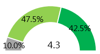
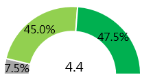
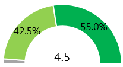

IP Service
Service usage and satisfaction
The total valid sample size is 40. According to the purposes of application for IPs. The members are divided into “IP registrants (Non-IP registrars)” which “apply for IPs to be used by themselves” and “IP registrars” which “apply for IPs to be used by other companies/agencies.” The ratio between both categories is 7:3, and “IP registrants” account for the majority in this survey.
With respect to the evaluation of satisfaction toward the relevant services used, all the services are largely rated positively. “read the TWNIC annual report, e-newsletter or others,” “followed official social media” and “Taiwan IPv6 global ranking website” all have 100% satisfaction. The reasons for good satisfaction with the services include the simplicity and high usability of websites, good perceptions toward the services, etc.
30% of the IP members or 12 interviewees have participated in the “formulation of IP allocation policies” including 7 from non-IP registrars and 5 representing IP registrars. Both are 100% satisfied with the formulation of such policies.
B1.Which services provided by TWNIC has your company/organization participated in or used in the last year? (You may select more than one.)(MA)
B2.How satisfied are you with the services listed above based on your experience with them?(SA)
Figure 1 Service usage and satisfaction
Participation in events and expectations and preferences
According to evaluation of the overall satisfaction of the IP members toward TWNIC, both “service quality” and “technical support” are rated positively by the IP members, with an average score of 4.3.
A further analysis of the perceptions of the “IP registrants” and “IP registrars” toward the overall satisfaction shows that half of the “IP registrars” are 100% satisfied with “service quality” and “technical support” and that half of the “IP registrants” think they are good. The primary service of “IP address allocation” has slightly higher satisfaction with an average score of 4.4. The satisfaction of the “IP registrants” is higher than that of the “IP registrars. With regard to trust and value perceptions, more than 50% of the interviewees think they are “very good” while the “IP registrars” have better trust and value perceptions.
Service Quality

Technical Support
IP address allocation
I trust TWNIC
Service Provided by TWNIC
are valuable to my business

A1.On the whole, how satisfied are you with TWNIC in the following respects?
A2.How satisfied is your company/organization with using TWNIC's IP allocation service?
A3.Based on your interactions with TWNIC, how far do you agree with the following statements?
n=40
Figure 2 Evaluation of satisfaction and value perceptions
Evaluation of service value perceptions
According to the evaluation of the value perceptions of the IP members toward the registration services, the primary services of “IP member registration/IP membership request website” and “IP address/ASN allocation, second opinion audit” have the highest value perception, or 87.5%. The reasons for such positive perceptions include good services, flexible sales and diversified development.
B7.As an IP registrar, how valuable are the following services in helping to promote your organization's registrar operations? Please rate the value of each service. (SA)
n=40
Figure 3 Evaluation of service value perceptions
Support and Service
77.5% of the IP members have difficulties in IPv4 scarcity. Among the two categories of stakeholders with different IP usage and roles, just 71.4% of the “IP registrants” think there are difficulties, while up to 91.7% of the “IP registrars” think so. ：
The required assistance that TWNIC can provide:
E3.Regarding insufficient IPv4 addresses, what assistance do you think TWNIC can provide? (MA)
n=40
Figure 4 Support and Service
45% of the IP members said they have begun to carry out their plans for provisioning of or transition to IPv6. Overall, only 15% of the IP members have completed provisioning or transition. 30% of them have yet to complete their plans, and 30% have not started to carry out their plans. In comparison, the rate of plan completion is higher in the case of “IP registrars.” Among the difficulties in IPv6 provisioning, the lack of motivation is the one faced by the most IP members, followed by the lack of technical knowledge
The required assistance that TWNIC can provide:
E6.Regarding IPv6 extension or conversion, what assistance do you think TWNIC can provide? (MA)
n=40
Figure 5 Support and Service
Participation in events and expectations and preferences
The rate of participation of the IP registrars in the training courses co-organized by APNIC is over 50%, with the majority of them participating in such courses twice at most. The satisfaction is 100%. In comparison, the participation rate of the IP registrants is lower, and their satisfaction is also lower.
The rates of participation of the IP members in conferences and training courses are 45% and 52.5% respectively. The rate of the “IP registrars” is nearly 10% higher than that of the “IP registrants”. Among the future expectations for events, “upload videos for future reference” (72.5%) is ranked first, followed by “downloadable conference or course content summaries” (55%). The expectations for both are over 50%, showing that compared to the addition of more features or values added, the preservability of contents is more important.
The interviewees wish to add the following issues or information:
“Technical application - Access to IPv6 information, CLOUD & SDN network application”
“Sharing of real cases - Sharing of real cases about technical application”
“Cybersecurity information - The status, difficulties and solutions regarding the defense against DDoS attacks in Taiwan; the use of allocated IPs with their own Cloud to build a network security mechanism”
Information service
With respect to the frequency of attention to the Internet issues published by TWNIC, 52.5% of the interviewees “often” pay attention, and 27.5% of them “sometimes” do so. The highest percentage of the reasons for attention appears in “to keep up with Internet news” (65.3%).
H1.How often do you take note of the information TWNIC publishes?(SA)
n=40
Figure 6 Frequency of attention
H2.Why do you take note of the information TWNIC publishes? (MA)
n=40
Figure 7 Reasons for attention
H3.What do you hope to see in the Internet-related news and intelligence provided by TWNIC in future? (MA)
n=40
Figure 8 Issues expected
Expectations and recommendations
Although there is not much demand from IP members in terms of expectations and suggestions, however, 70% of IP members believe that network business is currently facing challenges of “Network Information Security.”Thus, it shows that information security will be a service that can be provided. Besides, more than 90% or nearly 90% of IPv4 scarcity and IPv6 deployments are considered to require TWNIC assistance. The assistance methods include “Assisting in releasing idle IPv4 addresses” (61.3%) and “Sharing related methods of resource transferring” (58.1%), as well as “Providing IPv6 education training or talent training” (56.4%), “Sharing the reference case for the successful deployment of IPv6” (53.8%). With case sharing, education, and training is also part of the business that TWNIC can start to build.